Contents
Q2
clear
clc
myNumOfColors = 200;
myColorScale = [ 0:1/(myNumOfColors-1):1 ; 0:1/(myNumOfColors-1):1 ; 0:1/(myNumOfColors-1):1 ];
filenames = {'../data/barbara.png', '../data/TEM.png', '../data/canyon.png', '../data/church.png', '../data/chestXray.png', '../results/a_foreground.png'};
nums = [1 2 3 5 6 7];
Q2 a
[image, mask, foreground] = myForegroundMask('../data/statue.png', 30); f = figure('visible', 'on'); subplot(1,3,1), imagesc(image); title('original image'); daspect ([1 1 1]); colorbar; subplot(1,3,2), imagesc(mask); title('mask'); daspect ([1 1 1]); colorbar; subplot(1,3,3), imagesc(foreground); title('foreground image'); daspect ([1 1 1]); colorbar; axis tight; colormap gray; % saveas(f,'../results/a_all','png') % saving only foreground imwrite(foreground,'../results/a_foreground.png')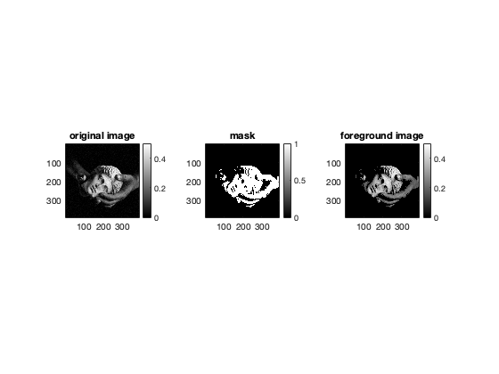
Q2 b
We use a 5 percentile-95 percentile strategy. Let:
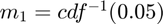 and 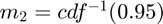 where cdf is the cumulative distribution function of the image intensities.
The transformaton function is: 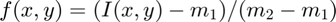 where I(x,y) denotes the pixel intensity of pixel (x,y).
Values below 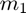 and above 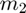 are mapped to 0 and 255 respectively.
for eg = 1:length(filenames) pth = filenames{eg}; save_name = strcat('../results/b_', string(nums(eg))); [original, new] = myLinearContrastStretching(pth); f = figure('visible', 'on'); if eg == 6 colormap gray end axis tight; subplot(1,2,1), imagesc(original); title('original image'); daspect ([1 1 1]); colorbar; subplot(1,2,2), imagesc(new); title('after linear contrast'); daspect ([1 1 1]); colorbar; % saveas(f, save_name, 'png'); end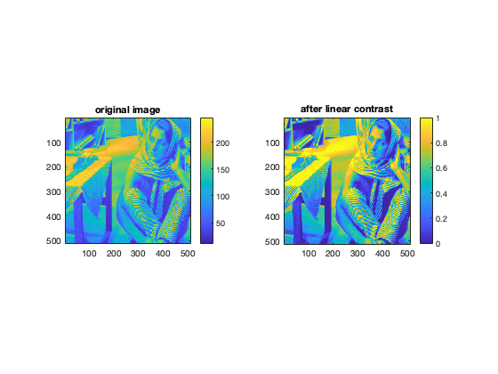 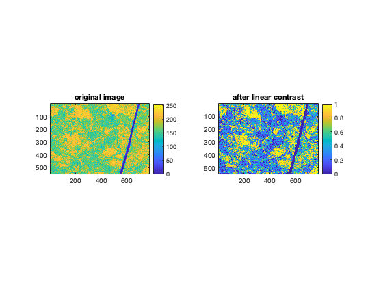 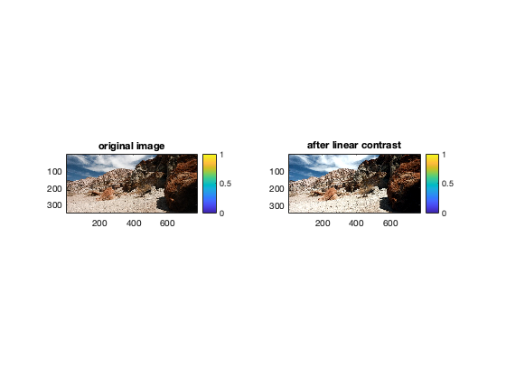 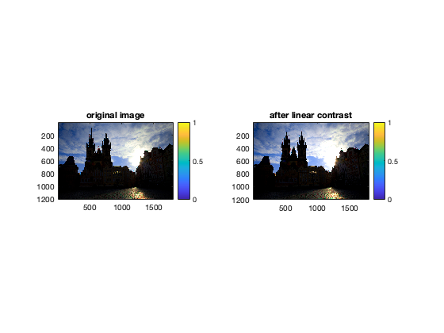
 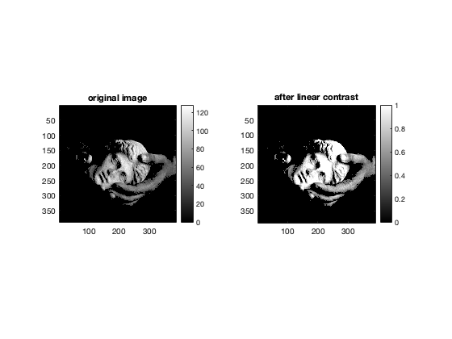
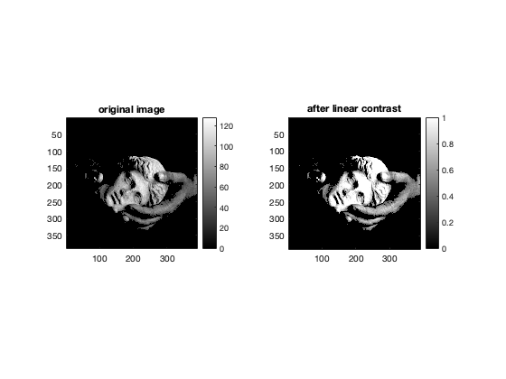 Contrast stretching is not effective in image 5 because it contains both very high-intensity pixels (close to 255) and very dark pixels (close to 0).
As a result, 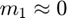 and 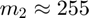, which results in a linear function which is close to the identity mapping.
Q2 c
for eg = 1:length(filenames) pth = filenames{eg}; save_name = strcat('../results/c_', string(nums(eg))); [original, new] = myHE(pth); f = figure('visible', 'on'); if eg == 6 colormap gray end axis tight; subplot(1,2,1), imagesc(original); title('original image') daspect ([1 1 1]); colorbar; subplot(1,2,2), imagesc(new); title('histogram-equalised image') daspect ([1 1 1]); colorbar; % saveas(f, save_name, 'png'); end
On applying HE on image 5, we get a much better result as compared to Linear Contrast Stretching.
Contrast significantly improves after applying HE because the intensity values get more spread out wherever the pdf is concentrated.
In case of image 5, it is helpful because there are 2 peaks - at very dark pixels (~0) and very bright pixels (~255).
clf orig_img = imread('../data/church.png'); for channel = 1:size(orig_img, 3) % calculate histogram [counts, ~] = imhist(orig_img(:,:,channel)); % ~ means ignore % calculate cdf pdf = counts/sum(counts); plot(1:256, pdf) hold on end title('PDF') hold off
Q2 d
clf [ref_img, input_img, hm_img] = myHM('../data/retina.png', '../data/retinaRef.png'); f = figure('visible', 'on'); subplot(1,3,1), imagesc(ref_img); title('reference image'); daspect ([1 1 1]); colorbar; subplot(1,3,2), imagesc(input_img); title('input image'); daspect ([1 1 1]); colorbar; subplot(1,3,3), imagesc(hm_img); title('histogram-matched image'); daspect ([1 1 1]); colorbar; axis tight; % saveas(f, '../results/d', 'png');
On applying HM, the veins in the original image become more prominent.
However, on applying the algorithm to each channel separately, the bright spot on the left becomes even brighter and we lose information.
Q2 e
filenames = {'../data/barbara.png', '../data/TEM.png', '../data/canyon.png', '../data/chestXray.png'};
nums = [1 2 3 6];
for eg = 1:length(filenames)
pth = filenames{eg};
for one_sided_window_size = [5, 20, 40]
for threshold = [0.05, 0.1]
window_size = 2*one_sided_window_size+1;
% save_name = strcat('../results/e_', string(nums(eg)), '_', string(window_size), '_point', string(threshold*10));
[original, new] = myCLAHE(pth, one_sided_window_size, threshold);
f = figure('visible', 'on');
axis tight;
subplot(1,2,1), imagesc(original);
title('original image')
daspect ([1 1 1]);
colorbar;
subplot(1,2,2), imagesc(new);
t = strcat('CLAHE with N = ', string(window_size), ' and t = ', string(threshold));
title(t)
daspect ([1 1 1]);
colorbar;
% saveas(f, save_name, 'png');
end
end
end
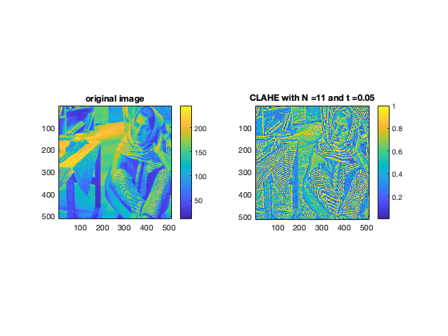 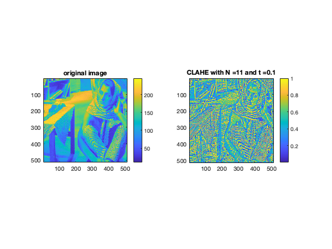 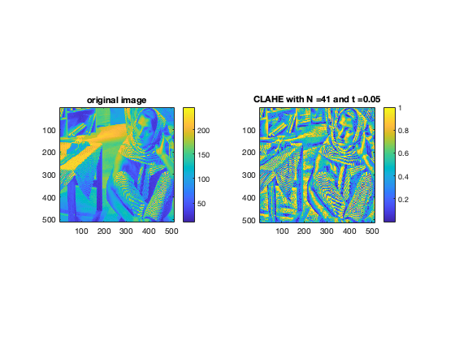 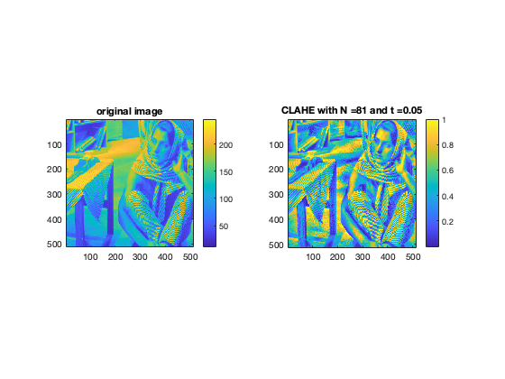 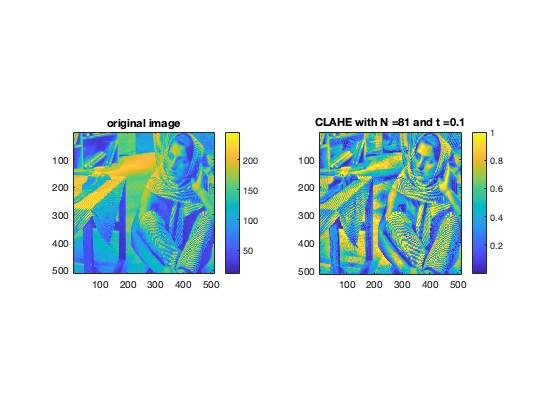 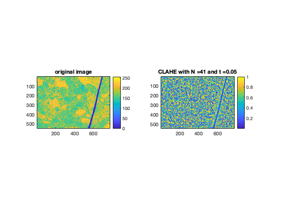 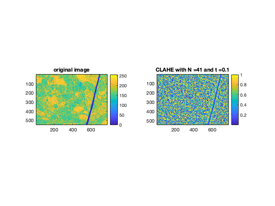 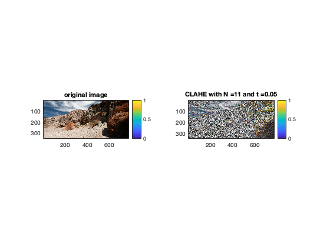 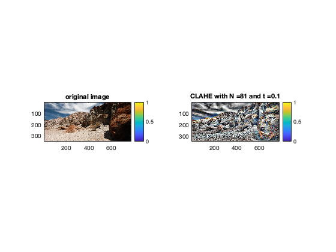 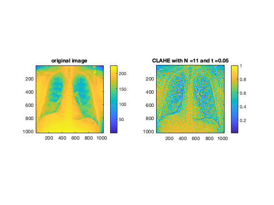  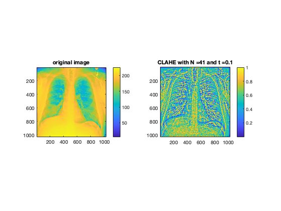 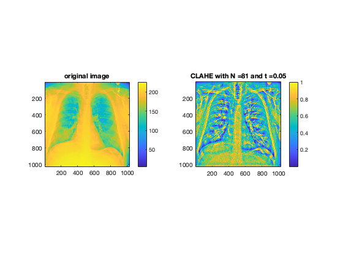 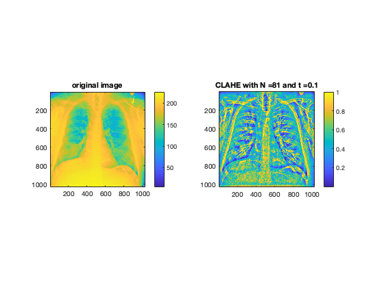
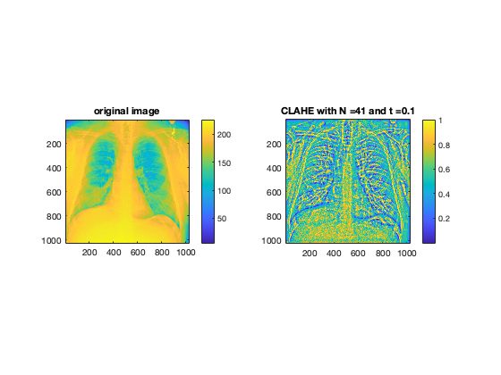 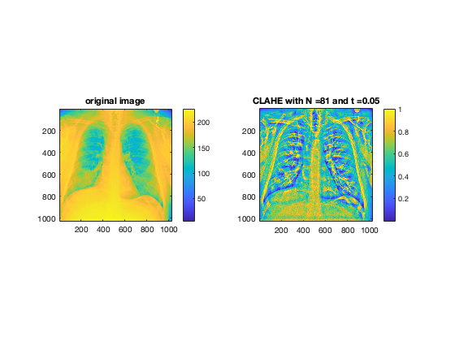 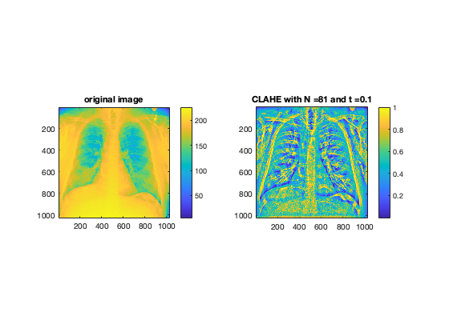